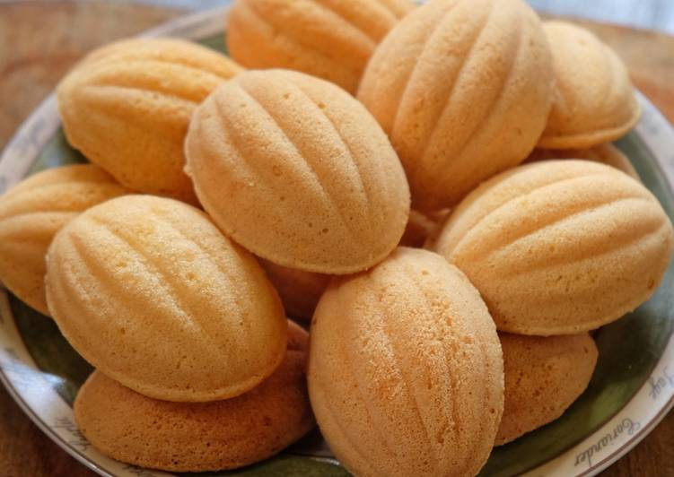
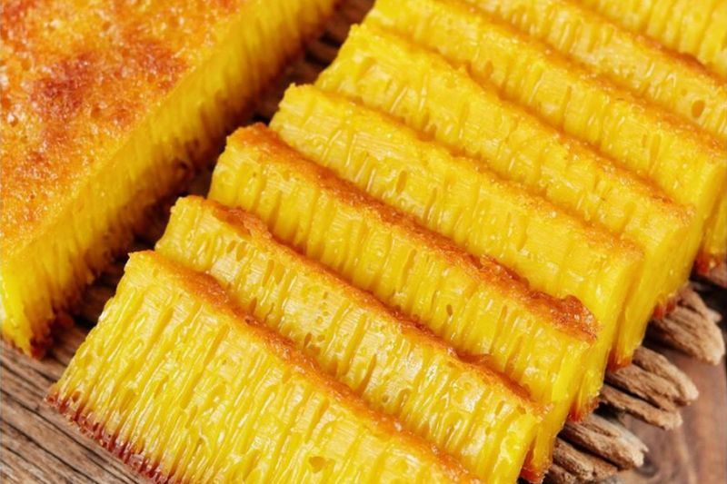

Klemben
Bolu klemben adalah sejenis kue tradisional Indonesia yang berasal dari daerah Banten. Kue ini terbuat dari campuran tepung beras, kelapa parut, gula kelapa, dan santan. Bolu klemben memiliki tekstur yang padat dan kenyal. Proses pembuatannya melibatkan pemanggangan dalam cetakan khusus yang disebut klemben.

Bika Ambon
Bika Ambon adalah kue tradisional Indonesia yang berasal dari daerah Ambon, Maluku. Kue ini terkenal karena teksturnya yang lembut dan berlubang-lubang, serta memiliki aroma pandan dan kelapa yang khas. Bahan utamanya meliputi tepung sagu, santan, telur, gula, dan daun pandan. Proses fermentasi adonan memberikan karakteristik lubang-lubang pada kue, sehingga menciptakan tampilan unik.